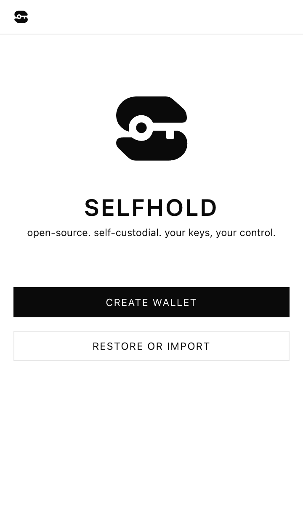
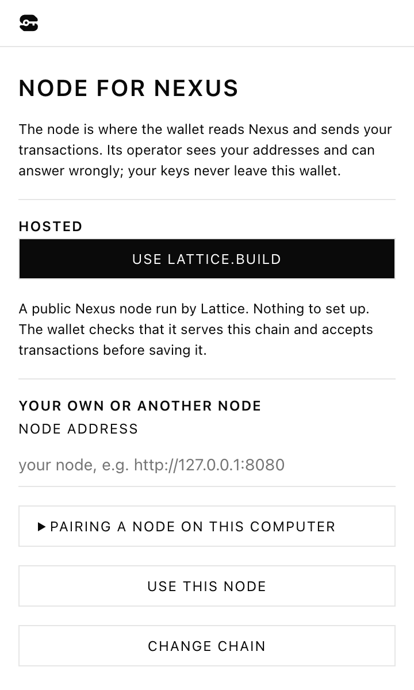

See what you’re sending.
Review the recipient, amount and fee before a transfer. Choose the fee yourself, with a warning when it is below your node’s minimum.
REVIEW → APPROVE → SENDYOUR WALLET. ON YOUR DEVICE.
A wallet in your browser.
The final say stays with you.
Selfhold lets you send and receive on Lattice, a blockchain network that records transactions. Review the recipient, amount and fee before you approve. Your keys stay on your device.
Get Selfhold for ChromeDesktop Chrome · Opens the Chrome Web Store
New to wallets? Start here
Start fresh.
Or bring your wallet with you.
NEW TO LATTICE?
Lattice is the network. Selfhold is your wallet. Lattice has a main chain called Nexus and connected child chains. Selfhold manages your accounts across them, so you can send, receive and choose how you connect from one place.
Explore LatticeBUILT AROUND YOUR DECISIONS
No need to hand your keys to a service to use Lattice. Selfhold brings the things you need to check into the wallet you control.
Review the recipient, amount and fee before a transfer. Choose the fee yourself, with a warning when it is below your node’s minimum.
REVIEW → APPROVE → SENDYour keys authorize payments. Selfhold encrypts its vault in your browser profile and signs transactions locally on your device.
YOUR DEVICE. YOUR SIGNATURE.Back up your wallet with an encrypted file or QR code. Keep your recovery phrase offline so you can restore the accounts it creates.
BACK UP BEFORE YOU BEGIN.
START SIMPLE. KEEP THE CHOICE.
A node is the service your wallet uses to read the network and send transactions.
Choose the Lattice service in the wallet to get connected without running a node yourself.
Already running a Lattice node? Pair the wallet with it and keep that choice per chain.
Node operators can see your requests. Their availability and the information they return matter. Your keys stay local.
LESS “TRUST US.” MORE “TAKE A LOOK.”
Good decisions start with information you can check. Read the code, understand the data flow, and know the limits.
The wallet source and build instructions are public under the MIT license.
Read the source ↗Learn what stays on your device and what your chosen nodes receive.
Read the privacy policy ↗Open code enables inspection. It does not replace an independent audit or careful use.
Read the security policy ↗YOUR FIRST FEW MINUTES
Start on a computer with Chrome. You don’t need to run your own node to begin.
Open the official Chrome Web Store listing. Review its details and permissions, then add the extension.
Make a wallet and choose a password, or import an existing wallet. Save a private, offline backup before adding funds.
Choose a Lattice chain and node. Share your address to receive, or carefully review the recipient, amount and fee before sending.
A wallet holds the keys that authorize transactions and gives you an address to receive funds. The network records transactions; Selfhold helps you view your accounts and approve sends. It is not a bank account.
This site describes the desktop Chrome extension for Lattice, including Nexus and its child chains. It does not promise a mobile app or support for other blockchain networks.
You need your recovery phrase or a suitable wallet backup to restore access. Encrypted backups need their password. Support cannot reset your keys. A phrase alone does not restore imported private keys or all local transaction recovery records.
Yes, Selfhold was previously named Lattice Wallet. The screenshots on this page are captured from the current wallet source, so the version in the store may still look a little different until its next release. The Chrome Web Store listing is the source for the currently distributed version and permissions.
No. Nodes can receive your IP address, queried addresses and transaction details. Public blockchain records may remain public. Selfhold keeps keys locally and contains no publisher analytics, but your browser profile, device and backups still need protection.
Contact support@lattice.build or open a GitHub issue. Follow the security policy for vulnerabilities. Never include recovery phrases, private keys, passwords or unredacted backups.
THE NEXT MOVE IS YOURS.
Desktop Chrome · Chrome Web Store